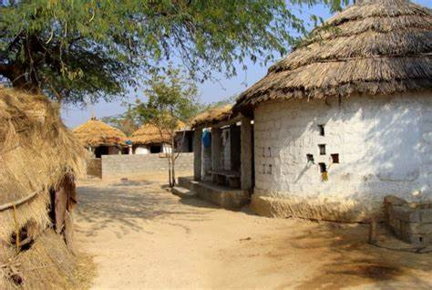

About Badoli
My Hometown,Badoli is a quaint village in Meerut District of Uttar Pradesh State,India.Known for its lush greenery and traditional lifestyle, it offers a peaceful escape from urban hustle. The village thrives on its agrarian economy, with fields of wheat, sugarcane, and other crops painting the landscape.Badoli pin code is 245206 and postal head office is kharkhuda.This place is the border of Meerut district and Ghaziabad district. With its blend of simplicity, tradition, and natural beauty, Badoli is a testament to the timeless essence of rural Uttar Pradesh.
Culture
Badoli is a treasure trove of traditional culture and rural charm. Known for its agricultural lifestyle, the villagers lead a simple and harmonious life centered around farming and community bonding. Festivals like Holi, Diwali, and Dussehra are celebrated with great enthusiasm, featuring folk dances, music, and colorful rituals. The local cuisine, with dishes like makki ki roti and gud laddoos, reflects the rich flavors of North India. Religious devotion plays a significant role in daily life, with temples serving as hubs for spiritual and social activities.
Language
The most spoken language in Badoli is Hindi,the official language of Uttar Pradesh and a major language in northern India. Alongside Hindi, the local dialect of Western Hindi, often referred to as Khari Boli, is commonly spoken by the villagers. This dialect reflects the cultural and linguistic richness of the region. Urdu may also be understood or spoken by some, given its historical significance in the area. The linguistic landscape of Badoli is a testament to the rich traditions and heritage of rural Uttar Pradesh.
Nearby Sightseeing
Badoli is surrounded by several notable sightseeing destinations that reflect the region's historical and cultural significance. One of the prominent attractions nearby is the Augharnath Temple, also known as the "Kali Paltan Mandir," located in Meerut city.The Hastinapur Wildlife Sanctuary, located a short drive away, is ideal for nature lovers, offering a chance to spot diverse flora and fauna. These places, coupled with the rustic charm of Badoli, make the area an appealing destination for visitors seeking a mix of history, spirituality, and nature.